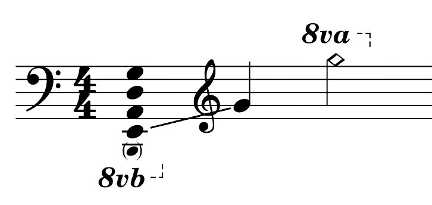

The Bass guitar one of the foundational instruments when it comes to music. It is responsible for holding down the rhythm along with the drums.
Emerging in the 1930's, it was the answer to the problem of the need for a louder and more prominent low-end sound in big Jazz ensembles. The Bass continued to evolve throughout the decades into the instrument we know now.
The Standard Bass has 4 strings and is usually 76CM in length. This affords the instrument a wide range of notes...
The four-string Bass guitar is traditionally tuned to E, A, D, and G, while extended-range basses, such as five-string or six-string models, can reach lower frequencies or extend into higher registers. Ultimately, the range of a bass guitar can vary depending on factors such as the number of strings, scale length, and the specific design of the instrument.